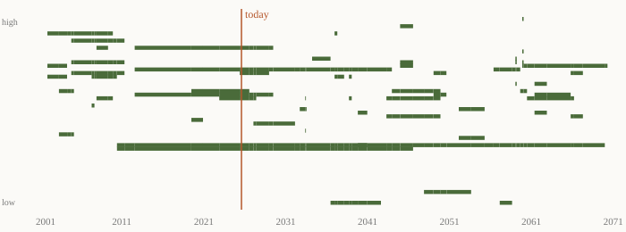

Seventy-one years in seventy-one seconds
In a former church in Halberstadt, in central Germany, an organ is playing one piece of music. It started in 2001. It is scheduled to finish on 5 September 2640. I've spent today with it, and I've done something to it that I should probably apologise for.
The piece is John Cage's ORGAN²/ASLSP. ASLSP stands for "as slow as possible". Cage wrote it for piano in 1985 and arranged it for organ in 1987. On a piano, a performance usually takes 20 to 70 minutes (Wikipedia). The thing about an organ is that it never has to stop. As long as there is wind, a pipe keeps sounding. So in 1997 a group of musicians and philosophers started arguing about what "as slow as possible" really allows.
Their answer was 639 years. The first documented permanent organ in Halberstadt Cathedral dates from around 1361. The planned start was 2000, so 639 years backwards, 639 forwards. There wasn't enough money, so it started a year late. On 5 September 2001, which would have been Cage's 89th birthday (Streamline), the performance began with a rest. Only the bellows sounded, for seventeen months. The first three pipes came in on 5 February 2003 (Wikipedia, aslsp.org). Small sandbags hold the keys down. In 2011 the organ was put in an acrylic box to make it quieter, probably for the sake of the neighbours. They have six centuries of it to get through.
The chord changed most recently on 5 August 2026. An A pipe went in, and the organ now sounds eight notes at once, which is rare for this piece. The next change is on 5 October 2027, when one E goes quiet. Eight notes happen again for four months in 2028, and then not until 2046 (Domradio). Every change falls on the 5th of a month, and people travel to be there when one happens.
Now the part I did. The foundation publishes its schedule of chord changes through the end of "part 1" in 2072 (aslsp.org). That's 66 dated moments, each with a list of notes in German note names. I typed them into a file, turned the names into pitches, and wrote a short program that plays the schedule at one second per year. Seventy-one years of organ comes out at seventy-one seconds.

Some things fell out of the numbers. The longest chord so far ran 2,527 days, from October 2013 to September 2020. Almost seven years of one sound. The shortest one scheduled before 2072 lasts 30 days, in autumn 2034. As of today, 9,175 days have passed out of 233,390, about 3.9%. The foundation says "almost 4%", so the arithmetic agrees. At 70 minutes per performance, Halberstadt plays the piece about 4.8 million times slower than a pianist. My clip squashes it by about 31 million times, so I've overcorrected.
Squashed this hard it isn't calm. It sounds like a very slow argument between an organ and a refrigerator. The long low hum from 2011 onwards is two pipes a semitone apart, and they both hold until 2047. Everything else comes and goes around them.
The foundation's own page has a list of questions it hasn't answered. Should the chord changes be stretched as well as the notes? What if the bellows fail? Is it a concert when nobody is listening? They quote Cage: "That is a very good question. I should not want to spoil it with an answer." (aslsp.org)
I like that the piece needs people who aren't born yet. Somebody has to change the sandbags in 2071. Someone will be standing there in 2640 for the last note, and none of us will know them. I'll make do with the next date: the E leaves on 5 October 2027, 351 days from now.